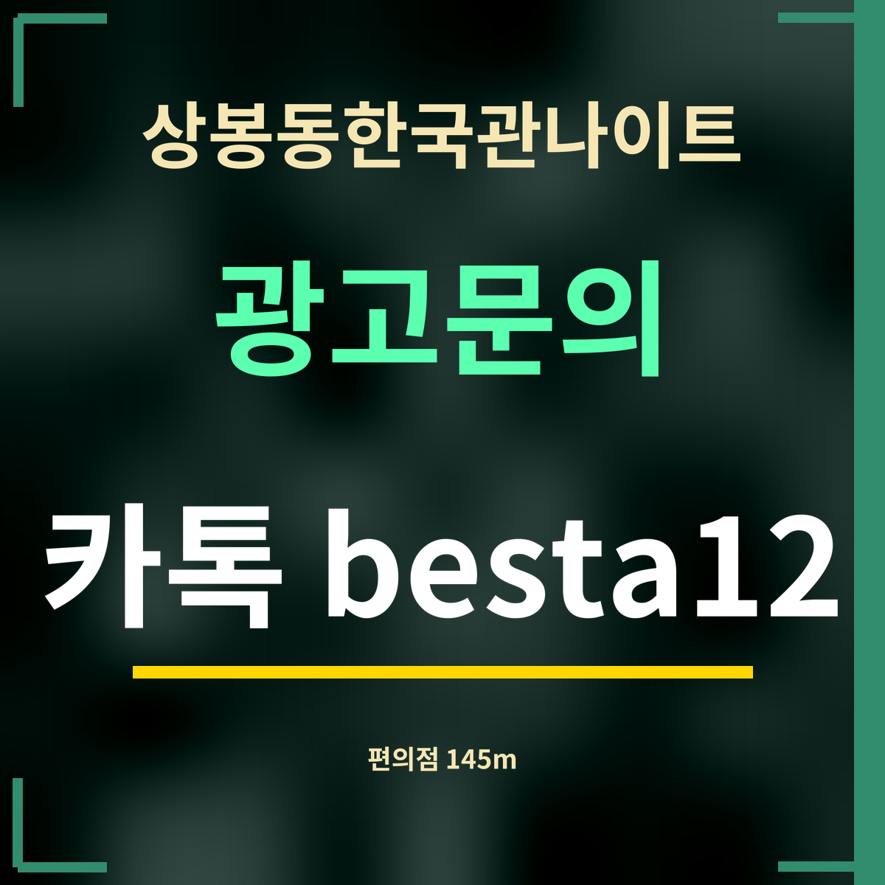

19세 미만 출입 금지
상봉동한국관나이트 근처 편의점 정리, 145m부터 7곳
편의점 이름과 위치는 9월 27일 카카오맵에서 찾은 그대로이고, 숫자는 가게에서 점포까지의 직선거리입니다. 이 쪽은 어느 가게와도 제휴하지 않았습니다.

직답: 상봉동한국관나이트에서 가장 가까운 편의점은 GS25 상봉센트럴시티점(망우로 313)으로 직선 145m입니다. 300m 안에 세 곳이 있습니다.
거리순 편의점
- GS25 상봉센트럴시티점 · 145m
- 중랑구 망우로 313
- CU 상봉사랑점 · 227m
- 중랑구 면목로92라길 15-2
- GS25 S상봉역점 · 279m
- 중랑구 망우로 297
- 이마트24 상봉역점 · 308m
- 중랑구 봉화산로30길 99
- 세븐일레븐 상봉본점 · 354m
- 중랑구 면목로95길 11
- GS25 상봉점 · 403m
- 중랑구 동일로120길 59-24
- GS25 상봉보람점 · 552m
- 중랑구 망우로 270
물 한 병의 쓸모
술자리 전후로 물을 챙겨 마시면 다음 날이 한결 편합니다. 들어가기 전에 가까운 편의점에서 물을 사 두거나, 나오는 길에 한 병 사서 돌아가는 동안 마시는 식으로 챙기면 좋습니다. 휴대폰 배터리가 모자라면 충전 용품도 편의점에서 구할 수 있습니다.
표에서 GS25 S상봉역점은 상봉역과 같은 주소(망우로 297)에 있어, 지하철을 타기 전후에 들르기 좋습니다. 영업시간은 점포마다 다를 수 있으니 늦은 시각에는 지도 앱에서 확인하세요.
돌아가는 길에 들르기
상봉동한국관나이트에서 상봉역으로 걸어가는 길이라면 역과 같은 주소의 GS25 S상봉역점, 망우역 쪽으로 간다면 망우로를 따라 이어진 점포를 들르기 좋습니다. 추운 계절에는 따뜻한 음료를 하나 들고 역까지 걸어가면 기다리는 시간이 덜 힘듭니다.
자주 묻는 것
가장 가까운 편의점은 어디인가요?GS25 상봉센트럴시티점(중랑구 망우로 313)으로, 상봉동한국관나이트에서 직선 145m입니다.
역 안이나 역 가까이에도 있나요?GS25 S상봉역점이 상봉역과 같은 주소(망우로 297)에 있고, 가게에서 직선 279m입니다.
밤새 여나요?점포마다 영업시간이 다를 수 있어 여기에는 적지 않았습니다. 지도 앱에서 확인하세요.
한 줄 정리: 상봉동한국관나이트 145m 앞에 편의점 — 물 한 병 챙겨 들어가고, 한 병 들고 나오세요.
밤늦게 돌아갈 때 필요한 곳은 근처 지구대에도 정리해 두었습니다.